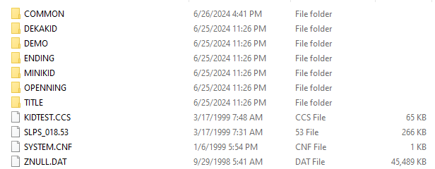
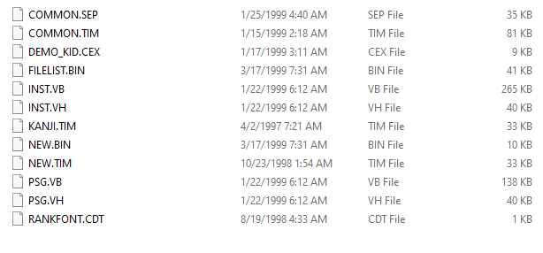
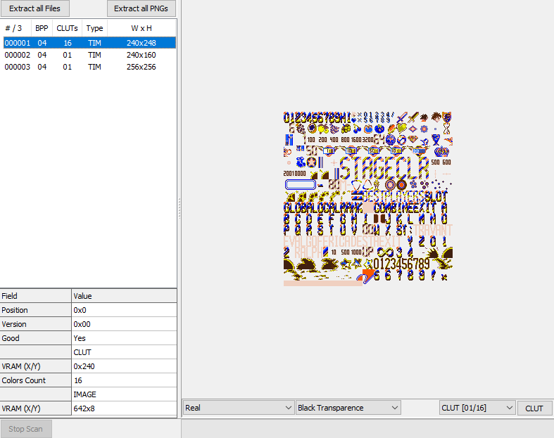
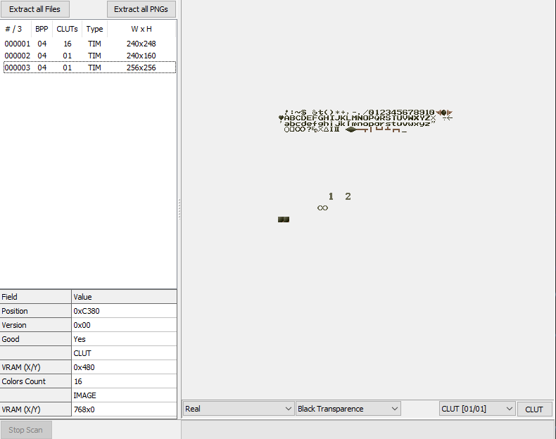
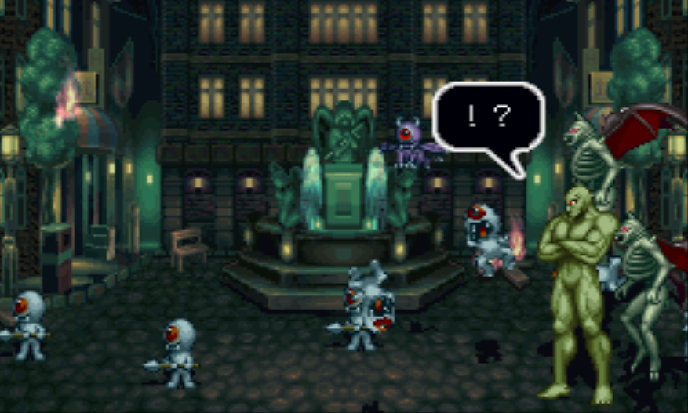
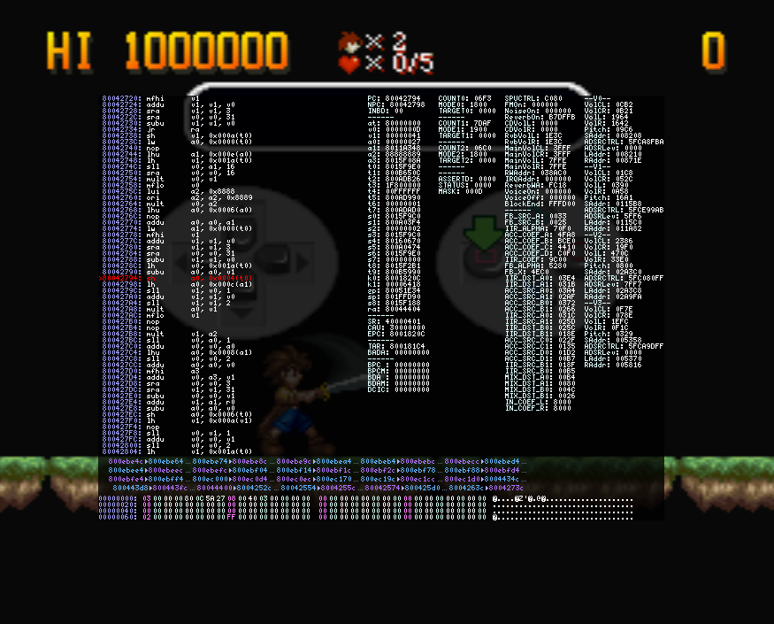
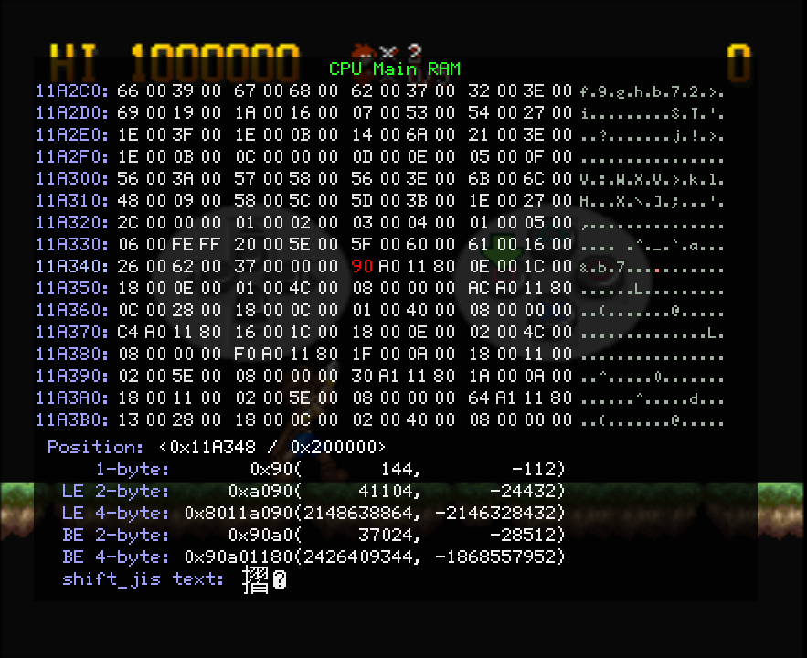
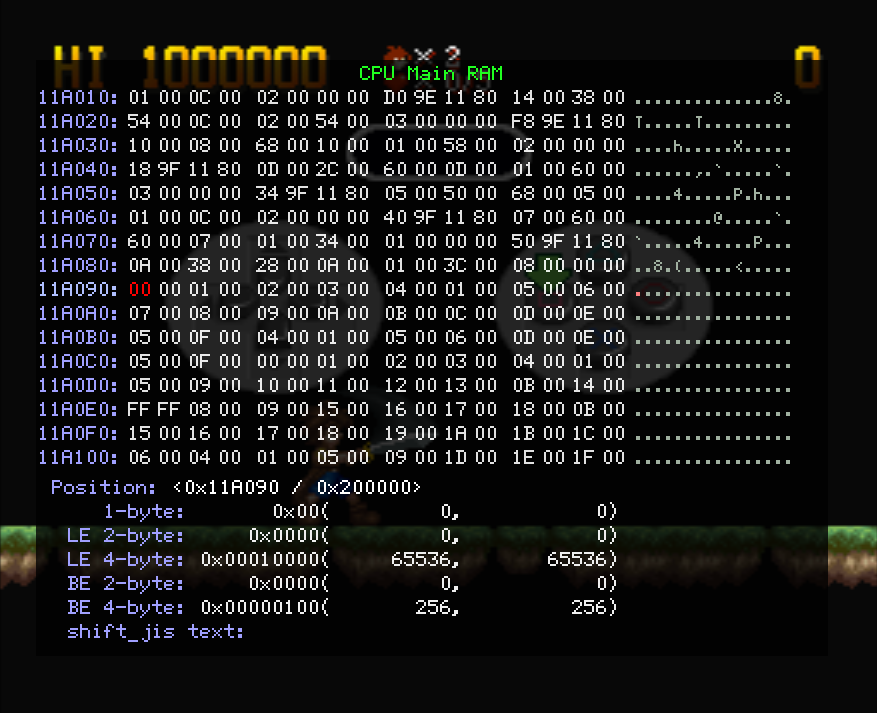
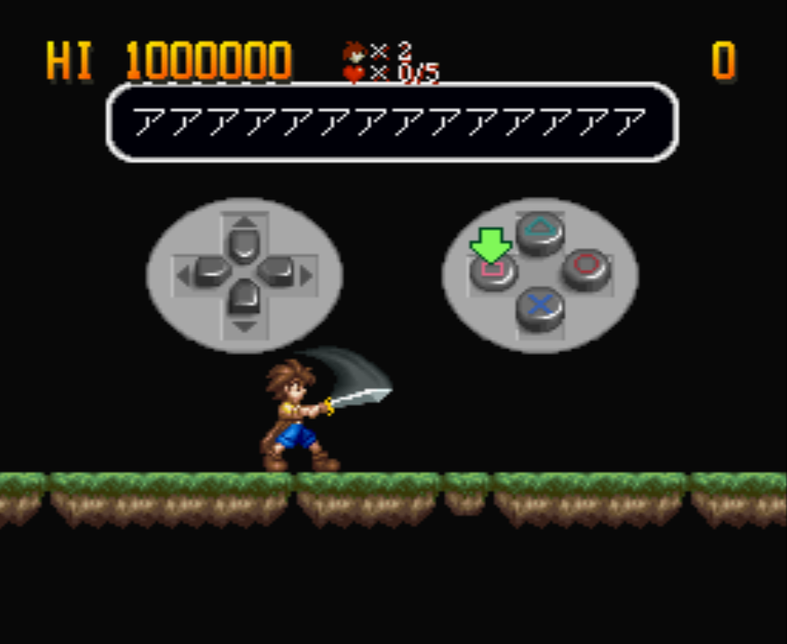
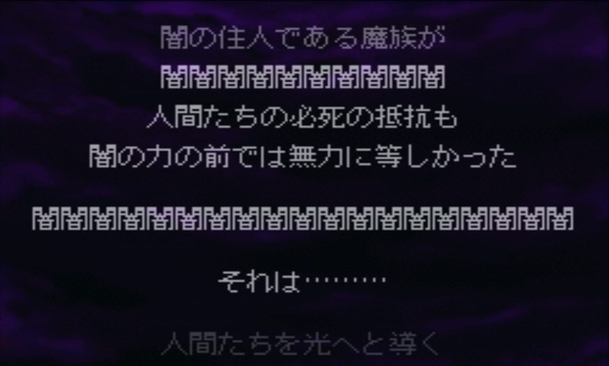

Part 1: Getting Started
Previous Part | Home | Next Part
Welcome to the first real part! Last time we discussed semantics and how I came to this project. In this part we're going to dive into how I got started with my first steps hacking. I'll reiterate that
I am writing this blog while I am working on this project, so anything I say is just what I think at the time of the part getting uploaded. I could be wrong! That's part of the fun! I want to detail my process
as a beginner, not write a how to hack Little Ralph guide. But I'm getting off track again, let's get to the hacking already.
There are quite a few things we can do to start out, but I figured the simplest and most straight-forward thing to do is to look at the files directly. Luckily, since this is a PS1 game,
looking at the files is as easy as looking at the disc:

So here we have the main directory of Little Ralph. Of particular note are the SLPS_018.53 file, which is the main executable file, and SYSTEM.CNF, the config file, which we will never touch.
Everything else here is just assets for the game as far as I know. Just from looking we can tell that everything is segmented nicely for us already by the folder names. In general, COMMON has assets used in every area,
OPENNING and ENDING are the opening and endings of the game, et cetera. There are some odd names, but we'll figure those out as we go. Let's open up the COMMON folder and see what it has for us:

There are quite a few files here, and with some extensions I've never seen in my life. It's likely these are extensions used internally that, for our purposes, mean nothing other than allowing us to
potentially categorize each file ourselves based on our findings to "reverse engineer" what the developers set them to mean by convention. However, there is one extension I recognize here, the .TIM file.
This is an image format commonly used for PS1 games, sitting here (probably) uncompressed for our viewing pleasure. And view it we shall with the program
Tim2View. Let's take a look at COMMON.TIM:

Looks like this file stores three images. The first is the one you see in the above image, looks like a bunch of graphics that aren't too useful to us. The second image was similar, containing a lot of
Ralph's sprites from the game, but the third image was much more interesting:

An English font sheet! Seems like this is the font used on the name entry screen in particular. Weird how a game only released in Japan only lets players enter names in English. It also seems kind of
scuffed, but whatever, this seems like a good find. I poked around a bit more, but other than viewing some other images that don't seem very useful for our purposes, there wasn't much to report on.
That about does it for the initial scan over the files, now it's time to get into the real stuff: using a debugger. I used the Mednafen debugger myself, it seemed like the one with the most useful tools.
One of the very useful tools is the memory viewer, which looks at the current contents of the PS1's RAM as the game is running, along with the ability to dump or load data as well as change RAM live as
the game is running. Very nice stuff to have when you're looking for a part in the data in particular.
Our objective here is to find the text, particularly text displayed on the screen that we can then translate into encoding the game reads it as. If we're lucky, the game will use something simple. ASCII or
even Shift-JIS would be very nice to see as those are encodings where I could just look up characters on a universal character table and get them in there nice and easy. The dialogue I chose to look at is
this text box from the opening where the antagonist, Valgo, is startled by the sudden defeat of his minions:

The reason I chose is this because it's an exclamation point and a question mark, two characters that are universal to all languages. Ideally we could find some English, but the only English I could find
in the game was the words "SPECIAL THANKS" in the credits, which are obviously much harder to reach that the opening cutscene. The opening also plays with no user input, guaranteeing I get the same
timing and everything when I check the text box. Despite being only two characters, I figure I'd have better luck with this than trying to decipher Japanese.
The actual analysis will come in the form of the RAM dumps that I mentioned earlier. I first ran the game twice and got to the same exact frame on this speech bubble twice, dumping the RAM each time and then
comparing them in a hex editor (I use HxD). This got me a few differences that I now know I can ignore when comparing different frames, since if they were different on the same exact frame, they definitely can't
be related to the game itself. Next, I got to the frame before the question mark in the text bubble was printed on screen, dumped the RAM, advanced one frame, then dumped again. Now I can do a file comparison on
these two and figure out where the differences are to hopefully find something that looks like text being printed.
So I used HxD's compare file feature and noted all the differences. Thankfully there weren't too many. The differences were some seemingly random byte changes, some alternating between 0 and 1, some counting down
forever... Not really seeing much of use here, let alone a newly printed character. Somewhere down the line I switched to the "How to Play" demo sequence that plays when you don't input anything on the title
screen just for a change of pace. I dumped the RAM a few more times, and this time after noting the differences between the files, I went to the addresses while the game was running and paid attention to
the values as the game progressed. I scanned through the various addresses, and just when I was getting to the end of the file and starting to lose hope, I finally found something useful: a byte that counted
down from 5, the number of frames between characters being printed, and when it reached 0, it set back to 5 and started counting again. Seems like this is what decides how long until a character gets printed!
So I changed the byte from 05 to FF, and sure enough, the next character took ages before finally printing. Hooray!
Well actually, this in itself isn't all that useful to us. I mean, 5 frames is a perfectly reasonable time to be printing. It's not this byte itself that matters, but the fact that the byte is related to the
text being printed on the screen means something more useful is most likely close by. And it was! While watching the previously mentioned countdown byte, I noticed some other bytes nearby changing when the text
boxes opened and closed. I changed those around, and it turns out those bytes control the size of the text box being created, particularly as the box grows and shrinks when it first shows up and closes.
Now we're talking, something that might actually come into play! It's still not the text we're looking for, but it's a much better lead. As the text box shows up, the text, or the pointer to it, will be right
around the corner.
I went ahead and put a breakpoint on the bytes controlling the text box size, and when it was reached, I saw this:

Check out register a1, it's got an address in it. Could be worth investigating, let's check it out in the RAM viewer:

Looks like an address to me. Note the 80 in the fourth spot. PlayStation games' memory start at 80000000 and use little endian, so we're looking at address 8011A090, which is the same as
11A090 since the RAM is only 2MB. Let's go there next.

We find some 2 byte sets that count up, with some outliers. You can't see in the image, but the text that comes up with this text box's sixth character is the same as the first, which also happens to be
where we see our first repeat, which also happens to be 00 00 again. Probably not coincidence, huh? So let's go ahead and make the next few sets all be 00 00 before they get read:

We just completed our very first text edit! Good for us, we found where the text is stored in RAM, at least for the How to Play demo. I searched for a similar sequence in the opening's RAM, and sure enough:

The text changed there too. Nice, we can apply this technique everywhere and find the text in RAM! This will be a great lead for finding where the text is stored in the files proper. But there's also some
potentially bad news tied to this. Looks like the game is figuring out which characters are used in the current scene and indexing them uniquely for that scene, which means we can only use characters
already used in that scene. Theoretically this won't be an issue, if we change the text in the files then this method will adapt to our English just fine. We'll cross that bridge when we get to it.
For now let's revel in our small victory.
Next part coming... never, probably. I've started posting updates on my Bluesky account (@zander3312.bsky.social) instead. Go there if you want to see more hacking stuff, though it won't be as thorough as
this page was. I guess it loses a bit of the original intent of this project, but still, hacking is hacking. Check it out if you want.